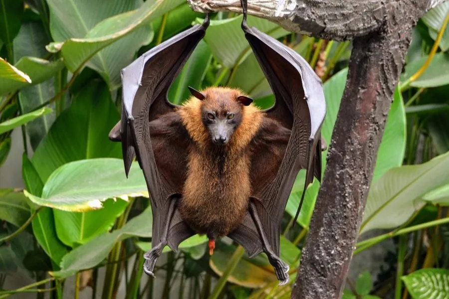

哺乳动物 · 动物界
马来大狐蝠 Pteropus vampyrus

东南亚体型最大的蝙蝠之一，翼展可达 1.5 米，以果实和花蜜为食，白天成群倒挂在树上，因狩猎和森林砍伐而受威胁。
- 分类
- 门脊索动物门纲哺乳纲目翼手目科狐蝠科属狐蝠属
- 栖息环境
- 红树林、热带雨林与农田边缘
- 地理分布
- 泰国、马来西亚、印度尼西亚、菲律宾等东南亚地区
- 保护级别
- IUCN 濒危（EN）；非中国分布物种
物种志
马来大狐蝠前臂长 18–20 厘米，体重 0.6–1.1 千克，翼展可达 1.5 米，是体型最大的蝙蝠之一。它没有回声定位能力，靠视觉和嗅觉寻找食物；脸部像狐狸，耳朵小，毛色为黑褐色，颈部有红褐色鬃毛。
马来大狐蝠分布于东南亚的泰国、马来西亚、印度尼西亚、菲律宾等地，栖息在红树林、热带雨林和农田边缘，白天成群倒挂在树上。它以果实、花蜜和花粉为食，能飞行数十公里觅食，是热带雨林重要的种子传播者和传粉者。雌性妊娠期约 6 个月，每胎 1 仔，寿命可达 20 年。由于被大量猎杀作为食物和药材，加上森林砍伐，马来大狐蝠数量下降，被列为濒危。
形态与习性
- 食性果实、花蜜与花粉
- 前臂长18–20 cm
- 体重0.6–1.1 kg
- 翼展可达 1.5 m
- 繁殖妊娠约 6 个月，每胎 1 仔
- 寿命可达 20 年
趣味知识
- 马来大狐蝠翼展可达 1.5 米，是体型最大的蝙蝠之一。
- 它没有回声定位能力，主要靠视觉和嗅觉寻找果实。
- 大狐蝠飞行数十公里觅食，是雨林重要的种子传播者。